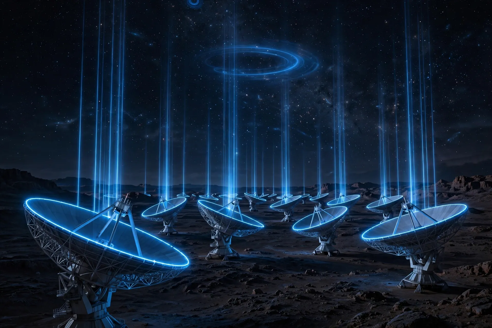

Ovia Inc — Articles
The Observatory That Takes Instructions: Agentic AI Joins the Search

The announcement
On October 30, 2026, NVIDIA reported that Breakthrough Listen and the SETI Institute are bringing agentic AI into the daily search for extraterrestrial intelligence at the Allen Telescope Array in Northern California. From a single request in natural language, an agent can now steer the telescope antennae, calibrate and focus the instrument, catch and fix errors in the incoming data and plot the result. The NVIDIA Holoscan platform processes the sensor streams, giving agents live data to act on. Andrew Siemion, Bernard M. Oliver chair for SETI at the SETI Institute and principal investigator of Breakthrough Listen, framed the moment as a breakthrough in translation: agentic observatories reaching out into the universe, built by humans, listening for technologies that could be far older.
Why it matters
Radio telescopes produce data faster than teams can store it, let alone study it. At the Allen Telescope Array, a Holoscan library called DAQIRI pulls terabits per second of sensor data straight into GPU memory, so observations are processed in flight rather than filling hard drives. NVIDIA reports that the system can handle 2.4 terabits per second on NVIDIA RTX PRO 6000 Blackwell GPUs, with inference running on premises, next to the instrument; that throughput figure is vendor-reported. Signal processing runs through CyberEther, a framework developed at the SETI Institute, using NVIDIA CUDA-X libraries. The pipeline has already produced a concrete result: the first real-time AI detection of a pulsar in the Crab Nebula, a known cosmic lighthouse found live in the stream.
The operations and craft angle
The most transferable part of the story is not the telescope. Nexus, a web-based observatory orchestrator, acts as the agent harness: one source of truth for instrument state, compute resources and pipelines. Researchers monitor packet loss, read live spectrograms and rewrite signal-processing blocks by prompting. That architecture — visible state, bounded tools, observable pipelines, results a human can check — is context engineering at telescope scale, and the same pattern decides whether agents succeed in an office, a factory or a network operations centre. The work at Ovia since December 2022, the Hugging Face Agents Course training and the discipline behind NVIDIA-Certified Professional: AI Operations all point the same way: agents earn trust when the context is curated, the state is visible and every action leaves a trace.
Caveats and fine print
Three cautions keep the story honest. First, no signal from an extraterrestrial civilization has been announced; the Crab Nebula pulsar is a known source, and detecting a known signal live is a validation of the pipeline, not a discovery of alien technology. Second, the headline performance figures come from NVIDIA and the project partners, so the throughput and time-saving claims should be read as vendor-reported until independent teams publish comparable runs. Third, compression claims — work of weeks or years done in hours — describe specific search and processing tasks, not the whole scientific method; candidate signals still demand human review, follow-up observation and scepticism.
What to watch
The team is evaluating open models, including NVIDIA Nemotron, for cases where data locality and fast turnaround matter most, and for observatories that may one day run offline on the far side of the Moon. Signals to watch: whether other observatories adopt the same agent-harness pattern; whether open models take over more of the on-site inference work; and whether the approach surfaces candidate signals that survive rigorous follow-up. The deeper lesson needs no telescope: give an agent live data, a single source of truth and checked results, and an instrument starts to answer back.